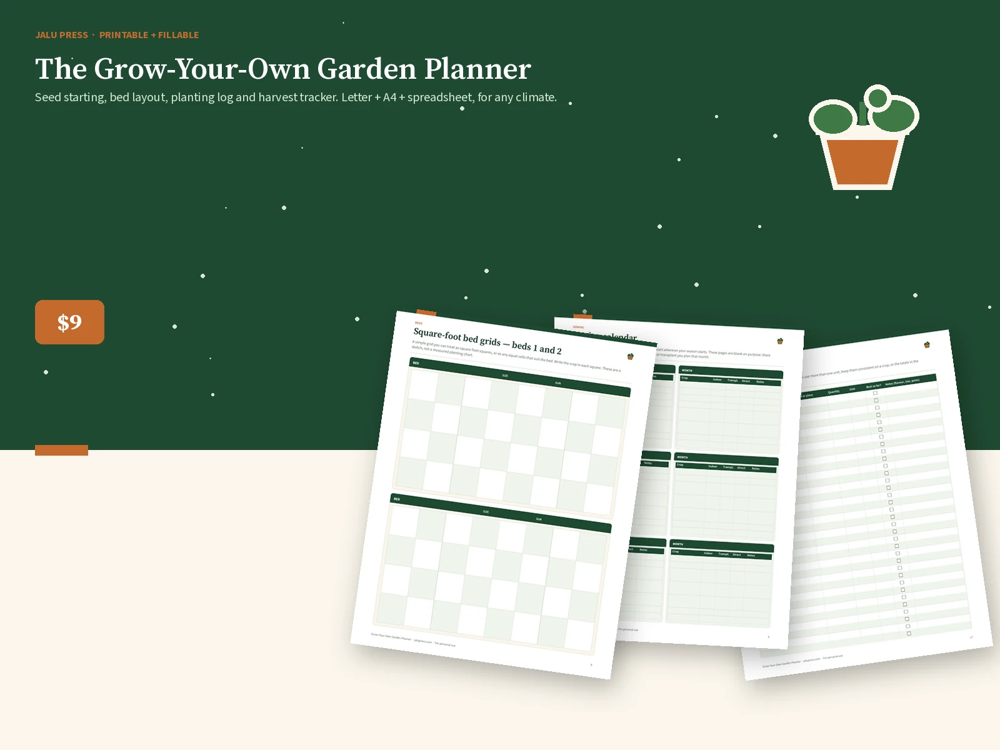

A season on paper, counted from your own frost dates
Seed packets in a drawer, a half-remembered last-frost date, and a sketch of the beds that never quite matches what went in. This planner puts a growing season in one place: what you want to grow, when to sow from dates you choose, where each crop goes, and what you actually harvested.
Start with a garden overview and a frost-dates page you fill in yourself. There is no built-in zone, country calendar or map. Look up local frost dates or a hardiness zone from your national weather or agriculture service (for example, USDA in the United States), then adjust them for your own garden. The same pages work in both hemispheres.
List the seed you already have, plan sowings month by month, and sketch each bed on a square-foot grid or a row layout. A four-year rotation page is there as a record, so related crops can move next season if you want them to. Keep planting, watering and harvest logs, take a weekly walk around the plot, and close the season with a review, notes on seed to save, and a page for next year. Every page is fillable on screen and prints cleanly in Letter or A4.
A spreadsheet that works out the sowing dates
On Setup, enter a garden name, the season, your last spring frost, your first autumn frost, and the units you use. If autumn falls in the next calendar year, use that later date. Days until each frost and the length of the frost-free stretch are calculated for you.
The Sowing Calendar takes the week offsets you type — weeks before last frost to start indoors, weeks after to transplant or direct-sow, and weeks before first autumn frost for a late crop — and turns them into dates. A seed inventory flags packets that are past their sow-by date or due within 30 days. The Bed Planner calculates area from the width and length you enter. The Harvest Tracker totals each crop and drives a chart. Garden Costs is a small log of seeds, soil, tools and supplies only, not a household budget.
The Dashboard shows days until each frost date, seeds expiring, tasks in the next 14 days, harvest totals and garden spend.
Rows marked “(example)” show how it works; they are not a planting calendar for your climate. Type over them or clear them.
What's included
- PDFGrow-Your-Own Garden Planner, US Letter25 fillable pages, 8.5 × 11 in
- PDFGrow-Your-Own Garden Planner, A425 fillable pages, 210 × 297 mm, same content
- XLSXGarden planner toolStart Here, Setup, Seed Inventory, Sowing Calendar, Bed Planner, Planting Log, Harvest Tracker, Garden Costs and Dashboard tabs (Excel or Google Sheets)
- PDFRead me firstHow to fill in, print and use the spreadsheet
Delivered together as one ZIP download.
Inside the planner
- Getting started: how to use the book, a garden overview for the site and the season, and a frost-dates page you fill in yourself
- Seed and sowing: a seed inventory, an indoor seed-starting station, and a blank month-by-month sowing calendar (you write the month names, so the year can start wherever your season starts)
- Beds: square-foot grids, row-layout pages, and a four-year crop rotation record
- Through the season: a planting log, a watering and feeding log, pests-and-problems notes (observation only), a harvest log, a weekly garden walk, and compost and soil notes
- Looking back and ahead: seeds to save and varieties to grow again, an end-of-season review, a page for next year, a twelve-month glance and lined notes
Good for
- Home and allotment growers planning the next vegetable, herb or flower season
- Beginners starting a first patch who want dates and beds in one place
- Gardeners outside a single country’s calendar, including in the southern hemisphere
- A gift for someone who grows food or flowers at home
Details
| Format | Fillable PDF (2 sizes), XLSX spreadsheet, read-me PDF |
|---|---|
| Pages | 25 per PDF, 3,700+ fillable fields and checkboxes |
| Works in | Adobe Acrobat Reader (free), Apple Preview and other form-capable PDF readers; Excel or Google Sheets |
| Spreadsheet | Sowing dates from your frost dates and week offsets, 80-row seed inventory, bed grids, planting and harvest logs, harvest chart, garden costs, dashboard |
| Units and currency | You choose length and harvest units, and the currency for garden costs |
| Printing | Color or black and white, home-printer margins |
| Language | English |
| Price | $9, paid with PayPal, or as 9 USDC (Solana or Polygon) or 9 USDT (TRC20 or Polygon) |
| License | Personal and household use. Print as many copies as you need for yourself or your household. Please do not resell or share the files. |
Please note
- This is a planning and record-keeping tool, not gardening, agronomy or pest-control advice. It does not recommend pesticides, herbicides or other chemical treatments, and it does not promise a yield.
- Sowing dates depend on your climate, your site and the guidance on your seed packet. Example week offsets in the spreadsheet are starting points only; adjust them locally.
- Find frost dates or a hardiness zone from your national weather or agriculture service (for example, USDA in the United States). This planner does not include a zone map or any organisation’s logo, and it does not hard-code zones or a country calendar.
- The example rows in the spreadsheet are made up to show how it works; replace them with your own.
- Garden Costs is a small log of seeds, soil, tools and supplies only, not a household budget.